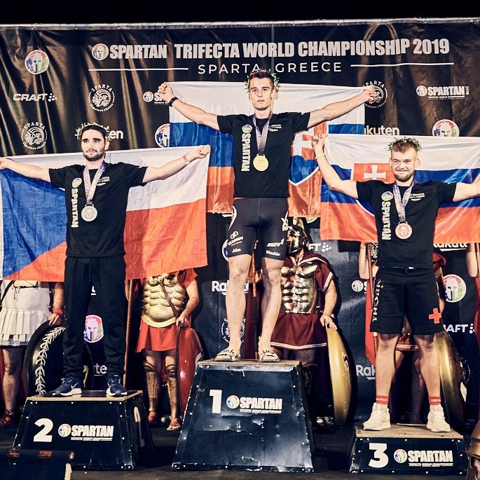

Kto som ?
Volám sa Ján Vladár, mám 22 rokov a pochádzam z Martina. Som študentom 3.ročníka na Fakulte Elektrotechniky a Informatiky v Bratislave kde študujem odbor Aplikovaná Informatika. V Bratislave bývam na internáte Mladosť. Vo voľnom čase rád športujem, od 6 do 17 rokov som hrával hokej za MHC Martin. Od roku 2017 sa venujem vytrvalostným športom - behám po kopcoch a cvičím, čoho kombináciiou sú prekážkové behy Spartan Race, po 5 rokoch pretekania a tréningov sa mi podarilo minulý rok skončil na 3.mieste v kat. do 23 rokov na Majstrovstvách Európy Spartan Race ktoré sa konali v Dolomitoch v Taliansku, o 3 mesiace neskôr som štartoval na Majstrovstvách sveta v Sparte v Grécku kde som sa po 5 hodinovom preteku stal Majster sveta do 23 rokov. V rámci prípravy taktiež dosť bicyklujem a leziem na stene. V prvom rade som však študent STU :)
Na strednej škole som študoval zameranie Informatiky na Strdnej Priemyselnej škole v Martine počas ktorej som sa zúčastnil aj Erazmus výmenného pobytu v Birminghame v Anglicku kde sme sa učili programovať v jazyku Python. Neskôr som v jazyku Python robil aj ročníkový projekt ktorý som prezentoval aj na FIIT STU na Pycone. Momentálne sa venujem tvorbe webových backend aplikáci v jazyku Java s použitím frameworku Spring. V škole ma najviac bavia predmety ktoré sa využívajú aj v praxi, čiže napríklad aj tento predmet :)Na strednej škole som študoval zameranie Informatiky na Strdnej Priemyselnej škole v Martine počas ktorej som sa zúčastnil aj Erazmus výmenného pobytu v Birminghame v Anglicku kde sme sa učili programovať v jazyku Python. Neskôr som v jazyku Python robil aj ročníkový projekt ktorý som prezentoval aj na FIIT STU na Pycone. Momentálne sa venujem tvorbe webových backend aplikáci v jazyku Java s použitím frameworku Spring. V škole ma najviac bavia predmety ktoré sa využívajú aj v praxi, čiže napríklad aj tento predmet :)
Športové úspechy
- Majstrovstvá sveta Spartan race U23 - 1.miesto
- Majstrovstvá Európy Spartan race U23 - 3.miesto
- Spartan European series 2020 - 9.miesto celkovo